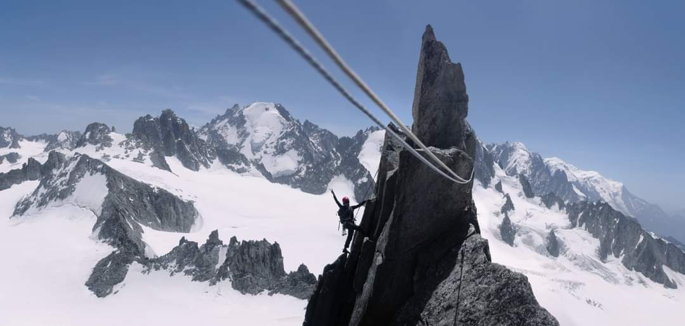
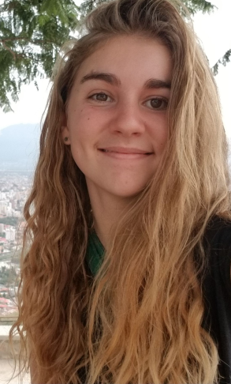

About

I am currently a PhD student, working at the Institut des Sciences de la Terre (ISTerre - Grenoble, FR).
My research focuses on understanding the links between Earth systems dynamics on macro-ecology and evolution 🦝🌍.
C.V.

Research Experience
-
From October 2022 to 2025.
Ph.D candidate in Earth Sciences – at Institut des Sciences de la Terre (ISTerre - Grenoble, FR) and the University of Sydney (Sydney, AUS)
[with L.Husson & T.Salles]
Tectonic Reshaping of the Biosphere: understanding the links between Earth system dynamics on macro-ecology and evolution, over deep time processes.
-
February to July 2022.
Research Internship – at Institut des Sciences de la Terre (ISTerre - Grenoble, FR) [with S.Aribowo]
Tectonics, geomorphic, and physiographic evolution of Java island during the Late Neogene. Physiographic evolution of Java island until Pleistocene times,
reconstruction of the tectonic and geomorphic evolution of the foothills of Java island.
-
April to July 2021.
Research Internship – at Institut des Sciences de la Terre (ISTerre - Grenoble, FR) [with L.Husson]
Climatic and environmental conditions of the Sunda Shelf during the extinction of Homo erectus. Physiography of SE Asia, Pleistocene climate,
Homo erectus, climate change, extinction, physiology.
Education 🎓
-
From October 2022 to 2025. Ph.D candidate in Earth Sciences – at Institut des Sciences de la Terre (ISTerre - Grenoble, FR) and the University of Sydney (Sydney, AUS) [with L.Husson & T.Salles]
Tectonic Reshaping of the Biosphere.
-
July 2022. Master's Degree in Earth Sciences - Geodynamics – at Université Grenoble Alpes (UGA - Grenoble, FR)
-
July 2019. B.S. Geology – at Université de Bordeaux (Bordeaux, FR)
Research interests 🔎
- Tectonics - Geomorphology - Geodynamics
- Geomodelling
- Macroecology & Ecological Modeling -
Publications 📖
Under review / Preprint
Published
-
2025. Lorcery, M., Husson, L., Salles, T., Lavergne, S., Hagen, O., and Skeels, A.
Deep time evolution of the Latitudinal Diversity Gradient: Insights from mechanistic models. PLoS One 20(9): e0332766. Link to Article
-
2024. Salles, T.,Joannes-Boyau, R., Moffat, I., Husson, L. and Lorcery, M..
Physiography, foraging mobility, and the first peopling of Sahul. Nat Commun 15, 3430. Link to Article
-
2023. Salles, T., Husson, L., Lorcery, M. and Boggiani, B.H.
Landscape Dynamics and the Phanerozoic Diversification of the Biosphere. Nature. 2023;624(7990):115–121. Link to Article
-
2022. Aribowo, S., Husson, L., Basile, C., Natawidjaja, D.H., Authemayou, C., Daryono, M.R., and Lorcery, M.
Back-Arc Thrusting in the Jakarta Basin. Tectonics, 41, e2021TC007120. Link to Article
Projects 📖
Contact 📫
How to reach me: lorcery@ecomail.eco
Or down below ⬇️